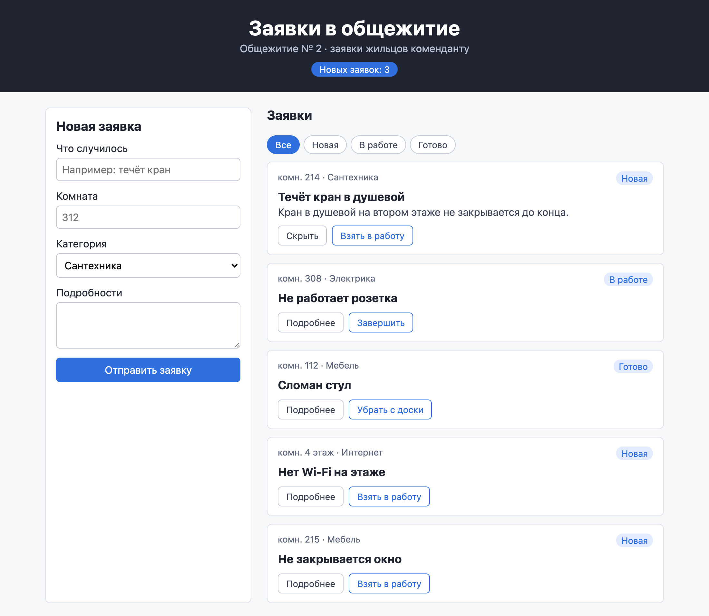

Справочник по Angular и React · модуль 1 · проект
П1
Проект:
доска заявок
На этой странице — задание проекта модуля 1. В главах 1.1–1.7 собрана доска заявок ИТ-отдела. В проекте студент делает такую же доску для другой службы колледжа: общежития или студсовета. Ниже — варианты, обязательные требования, порядок работы, правила работы с ИИ и порядок защиты. После проекта к доске подключается автоматизация: уведомление о заявке в Telegram.
- Режим ИИ
- Р1 — ИИ объясняет, код пишет студент (глава 0.5)
- Вариант
- Общежитие, студсовет или свой
- Основа
- Проект
zayavkiпосле главы 1.7 - Сдаётся
- Папка проекта, журнал работы с ИИ, защита у преподавателя
§1Варианты
Доска делается для одной из служб. Устройство у всех вариантов одно: форма, список карточек, статусы, фильтр, сохранение в браузере. Отличаются тексты, поле места и категории. Вариант выбирается вместе с преподавателем; свой вариант — например, библиотека или спортзал — тоже можно, если в нём есть место и четыре категории.
| Вариант | Заголовок и подпись | Поле места | Категории |
|---|---|---|---|
| Общежитие | «Заявки в общежитие» · заявки жильцов коменданту | Комната | Сантехника, Электрика, Мебель, Интернет |
| Студсовет | «Студсовет» · предложения и обращения студентов | Группа | Мероприятие, Учёба, Столовая, Другое |
| Свой | Согласуется с преподавателем | Своё | Четыре своих |
Так выглядит вариант «Общежитие» после переделки доски из глав.

§2Обязательные требования
Работа принимается, если выполнены все пункты. Справа — глава, где разобран нужный механизм.
- Шапка с названием своей службы и числом новых заявок1.2, 1.4
- Форма: что случилось, место, категория из четырёх своих, подробности1.2, 1.6
- В начале на доске не меньше пяти своих заявок разных статусов, у каждой свой
id1.5 - Карточки выводятся из массива через
mapс ключомkey1.5 - Кнопка в карточке переводит заявку «Новая → В работе → Готово», готовую можно убрать с доски1.4, 1.5
- Подробности раскрываются по кнопке1.5
- Фильтр «Все / Новая / В работе / Готово» и сообщение, если заявок нет1.5
- Новая заявка из формы появляется первой, форма очищается1.6
- Пустые название и место не принимаются, под формой сообщение1.6
- Заявки и статусы сохраняются после перезагрузки страницы1.7
- Новая заявка отправляется на вебхук n8n, доска сообщает, удалось ли1.7
npm run buildиnpm run lintпроходят без ошибок и предупреждений1.1
§3Порядок работы
ДелаемПеределываем доску под свой вариант
- Возьмите основу
Скопируйте свою папку
zayavkiпосле главы 1.7 в новую, напримерzayavki-obshchezhitie. В новой папке выполнитеnpm installиnpm run dev. - Шапка
В
Header.tsxзамените заголовок и подпись на свои. - Данные
В
requests.tsзамените четыре категории в типеCategoryи пять заявок вinitialRequestsна свои. TypeScript подчеркнёт заявку, у которой категория не из нового списка. - Форма
В
RequestForm.tsxзамените подпись поля места, подсказкиplaceholder, варианты<option>, начальную категорию в двух местах (useStateи очистка формы) и текст сообщения об ошибке. - Карточка
В
RequestCard.tsxзамените «каб.» на своё сокращение: «комн.», «гр.». - Хранилище
В
storage.tsзамените ключ'zayavki'на свой, например'zayavki-obshchezhitie'. Иначе доска прочитает из localStorage заявки ИТ-отдела, сохранённые раньше на этом же адресе. - Проверка
Обновите страницу и пройдите список из §2 по порядку. Во втором терминале выполните
npm run buildиnpm run lint. - Уведомление
Подключите автоматизацию по странице «Автоматизация». В тексте узла Telegram замените «Кабинет» на название своего поля места.
Механизмы доски — состояние, map, обработчики, сохранение, отправка — у всех вариантов одинаковые. Если для своего варианта приходится менять App.tsx, стоит остановиться и проверить, не проще ли решить задачу данными.
§4Дополнительные задания
Задания выполняются по выбору; сколько их нужно для какой оценки, сообщает преподаватель. Подсказки к первым двум есть в «Проверьте себя» глав.
| Задание | Что получится | Подсказка |
|---|---|---|
| Счётчики в фильтре | На кнопках «Новая (3)», «В работе (1)» | Глава 1.5, последний вопрос «Проверьте себя» |
| Кнопка «Вернуть» | Заявку «В работе» можно вернуть в «Новая» | Глава 1.4, последний вопрос; функцию передать карточке, как onNext |
| Поиск по названию | Над списком поле, список сужается по мере ввода | Ещё одно управляемое поле (глава 1.6) и ещё одно условие в visible: r.title.toLowerCase().includes(…) |
| Статус в уведомлении | В сообщении Telegram строка «Статус: Новая» | Страница «Автоматизация», последний вопрос |
| Срочность | В форме флажок «Срочно», срочные карточки выделены рамкой | Поле urgent: boolean в типе, <input type="checkbox"> с checked и onChange, класс по условию (глава 1.5) |
§5Работа с ИИ
Проект выполняется в режиме Р1 из главы 0.5. ИИ можно спрашивать, что означает ошибка, как работает функция, чем отличаются два способа. Код пишется самостоятельно. Автодополнение ИИ в редакторе отключается. Токен бота и номер чата в чат ИИ не вставляются.
К работе прилагается журнал — файл ai-log.md в папке проекта. Каждый вопрос к ИИ — одна строка таблицы:
# Журнал работы с ИИ Инструмент: GigaChat (или другой) | Дата | Вопрос | Что взял из ответа | Что не взял и почему | |-------|----------------------------------------------|---------------------------------------------|--------------------------------------------------------| | 12.11 | Что значит Type 'string' is not assignable … | Нужно as Category в onChange списка | — | | 12.11 | Как сделать поиск без учёта регистра | toLowerCase() у обеих строк | Совет хранить отфильтрованный список в useState: это | | | | | вычисляемое значение, глава 1.5 |
Последний столбец важен: отклонённый совет с объяснением причины засчитывается как часть работы. Если ИИ не использовался, в журнале так и пишется.
§6Сдача и защита
ДелаемГотовим работу к сдаче
- Проверьте сборку
Во втором терминале выполните обе команды. Ошибок и предупреждений быть не должно.
Терминал · папка проекта npm run build npm run lint
- Проверьте, что в коде нет токена
В VS Code нажмите Ctrl+Shift+F и найдите в проекте
api.telegram.orgи начало своего токена. Совпадений быть не должно: токен хранится только в n8n. - Соберите архив
Удалите папки
node_modulesиdist— их восстанавливаютnpm installиnpm run build. Упакуйте папку проекта в архив вместе сai-log.md. Если преподаватель так договорился с группой, вместо архива сдаётся ссылка на репозиторий GitHub. - Приложите снимок уведомления
Снимок экрана Telegram с сообщением бота о заявке своего варианта.
РазбираемсяКак проходит защита
На защите доска запускается у преподавателя: npm install, npm run dev, затем проверка по списку из §2. Студент показывает уведомление в Telegram с работающим n8n. Затем преподаватель указывает на строки кода и спрашивает, что они делают и почему так написаны. Ответ «так написал ИИ» оценивается как отсутствие ответа. Примеры вопросов:
- Почему ключ
<RequestCard>вmap—r.id? Что сломается с номером в массиве? - Что произойдёт, если в
handleSubmitубратьevent.preventDefault()? - Почему
newCountиvisibleне хранятся вuseState? - Зачем
useState(loadRequests)записан без скобок? - Почему заявка добавляется на доску до отправки в n8n?
- Где хранится токен бота и почему не в коде доски?